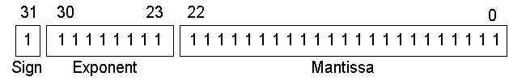

Tutorial: Floating-Point Binary
© Kip R. Irvine, 2000. All rights reserved.
There is no section of my book covering this topic, so this topic is presented as a tutorial. Click here to view the workbook exercise relating to this topic.
The two most common floating-point binary storage formats used by Intel processors were created for Intel and later standardized by the IEEE organization:
| IEEE Short Real: 32 bits | 1 bit for the sign, 8 bits for the exponent, and 23 bits for the mantissa. Also called single precision. |
| IEEE Long Real: 64 bits | 1 bit for the sign, 11 bits for the exponent, and 52 bits for the mantissa. Also called double precision. |
Both formats use essentially the same method for storing floating-point binary numbers, so
we will use the Short Real as an example in this tutorial. The bits in an IEEE
Short Real are arranged as follows, with the most significant bit (MSB) on the left:
|  | Fig. 1 |
The Sign
The sign of a binary floating-point number is represented by a single bit. A 1 bit indicates a negative number, and a 0 bit indicates a positive number.
The Mantissa
It is useful to consider the way decimal floating-point numbers represent their mantissa. Using -3.154 x 105 as an example, the sign is negative, the mantissa is 3.154, and the exponent is 5. The fractional portion of the mantissa is the sum of each digit multiplied by a power of 10:
.154 = 1/10 + 5/100 + 4/1000
A binary floating-point number is similar. For example, in the number +11.1011 x 23, the sign is positive, the mantissa is 11.1011, and the exponent is 3. The fractional portion of the mantissa is the sum of successive powers of 2. In our example, it is expressed as:
.1011 = 1/2 + 0/4 + 1/8 + 1/16
Or, you can calculate this value as 1011 divided by 24. In decimal terms, this is eleven divided by sixteen, or 0.6875. Combined with the left-hand side of 11.1011, the decimal value of the number is 3.6875. Here are additional examples:
| Binary Floating-Point | Base 10 Fraction | Base 10 Decimal |
| 11.11 | 3 3/4 | 3.75 |
| 0.00000000000000000000001 | 1/8388608 | 0.00000011920928955078125 |
The last entry in this table shows the smallest fraction that can be stored in a 23-bit mantissa. The following table shows a few simple examples of binary floating-point numbers alongside their equivalent decimal fractions and decimal values:
| Binary | Decimal Fraction | Decimal Value |
| .1 | 1/2 | .5 |
| .01 | 1/4 | .25 |
| .001 | 1/8 | .125 |
| .0001 | 1/16 | .0625 |
| .00001 | 1/32 | .03125 |
The Exponent
IEEE Short Real exponents are stored as 8-bit unsigned integers with a bias of 127. Let's use the number 1.101 x 25 as an example. The exponent (5) is added to 127 and the sum (162) is stored in binary as 10100010. Here are some examples of exponents, first shown as decimal values, then as biased decimal, and finally as 8-bit unsigned binary:
| Exponent (E) | Adjusted (E + 127) |
Binary Representation |
| 5 | +162 | 10100010 |
| 0 | +127 | 01111111 |
| -10 | +117 | 01110101 |
| 128 | +255 | 11111111 |
| -1 | +126 | 01111110 |
Notice that the binary exponent is unsigned, so it cannot be negative. That is why the bias of 127 is used. The largest possible exponent is 128, because when added to 127, produces 255, the largest unsigned value represented by 8 bits. If the approximage range is from 1.0 x 2-127 to 1.0 x 2128. Expressed with decimal exponents, this is
Normalizing the Mantissa
Before a floating-point binary number can be stored correctly, its mantissa must be normalized. The process is basically the same as when normalizing a floating-point decimal number. For example, decimal 1234.567 is normalized as 1.234567 x 103 by moving the decimal point so that only one digit appears before the decimal. The exponent expresses the number of positions the decimal point was moved left (positive exponent) or moved right (negative exponent).
Similarly, the floating-point binary value 1101.101 is normalized as 1.101101 x 23 by moving the decimal point 3 positions to the left, and multiplying by 23. Here are some examples of normalizations:
| Binary Value | Normalized As | Exponent |
| 1101.101 | 1.101101 | 3 |
| .00101 | 1.01 | -3 |
| 1.0001 | 1.0001 | 0 |
| 10000011.0 | 1.0000011 | 7 |
You may have noticed that in a normalized mantissa, the digit 1 always appears to the left of the decimal point. In fact, the leading 1 is omitted from the mantissa's actual storage because it is redundant.
Putting it All Together
We have now reached the point where we can combine the sign, exponent, and normalized mantissa into the binary IEEE short real representation. Using Figure 1 as a reference, the value 1.101 x 20 would be stored as sign = 0 (positive), mantissa = 101, and exponent = 01111111 (the exponent value is added to 127). The leading "1." was dropped from the mantissa. Here are more examples:
Binary Value |
Biased Exponent | Sign, Exponent, Mantissa |
| -1.11 | 127 | 1 01111111 11000000000000000000000 |
| +1101.101 | 130 | 0 10000010 10110100000000000000000 |
| -.00101 | 124 | 1 01111100 01000000000000000000000 |
| +100111.0 | 132 | 0 10000100 00111000000000000000000 |
| +.0000001101011 | 120 | 0 01111000 10101100000000000000000 |